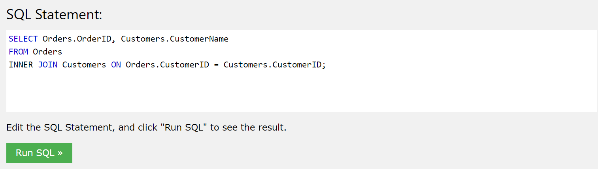
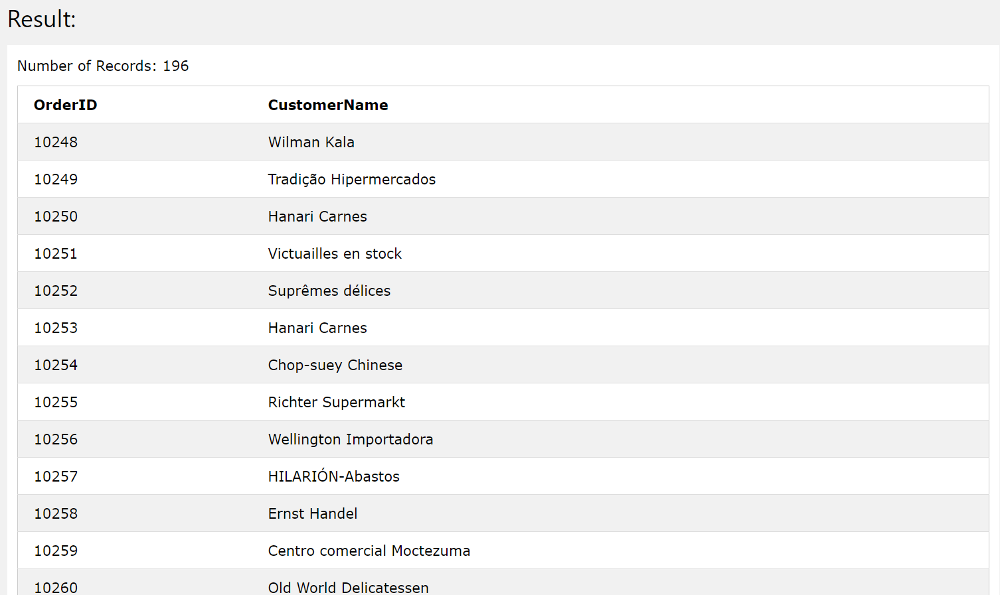
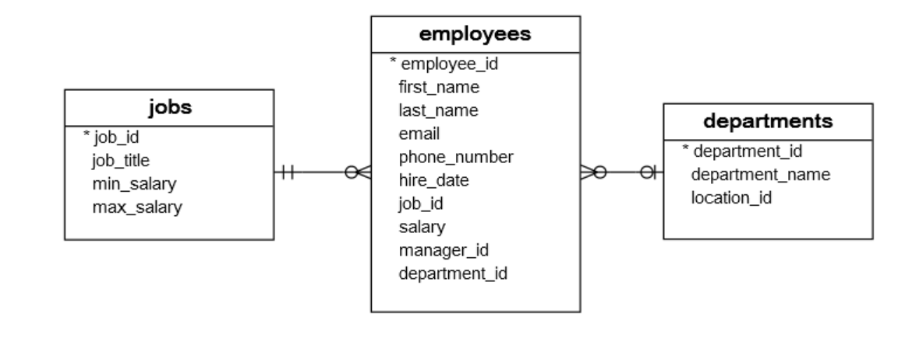
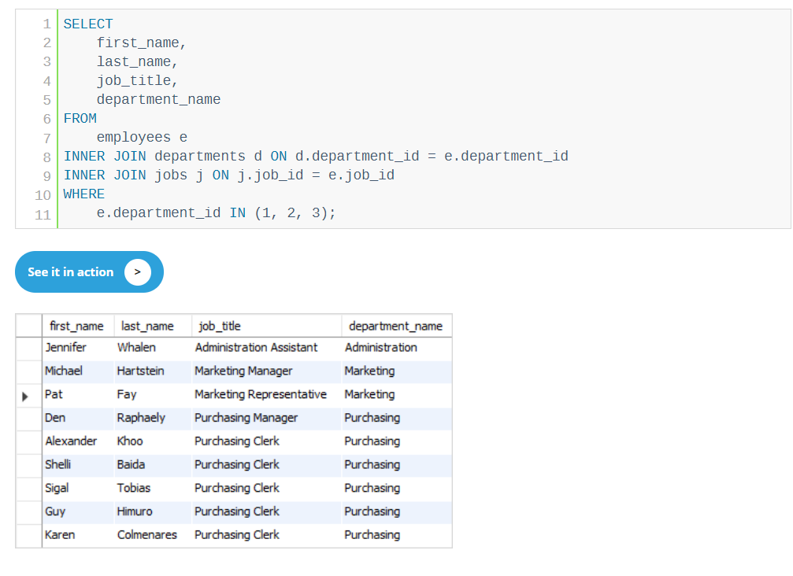

Inner join allows you to connect two tables within the same database to one another based on common fields that they share. An example of the code from w3schools is shown below:
In this case the two columns, Orders.OrderID, Customers.CustomerName are the two fields that the user is looking for, but they appear on two different tables. The FROM orders part tells us where we want to originate the data, from orders, and the INNER JOIN Customers tells us that we want to match it up with the data from the Customers table.
The next part ON tells the computer which field it should use to determine whether or not it should draw from e ach of the tables. In this case the shared field between the two tables is customerID, so whenever Orders.CustomerID = Customers.CustomerID the computer will return the fields specified in the SELECT section.
The computer will not return the customerID of each of the columns because it is not specified in the SELECT statement, rather it is using it to match the specified data(orderID and CustomerName) to one another and returning just those columns instead like below:
Another quick note is that INNER JOIN lives exclusively inside the FROM statement(which we use to delineate where we pull our data from) meaning that you can potentially chain more commands afterwards like WHERE or ORDER BY. You can also add in a INNER JOIN within the same FROM statement to include data from 3 tables like seen below:
 